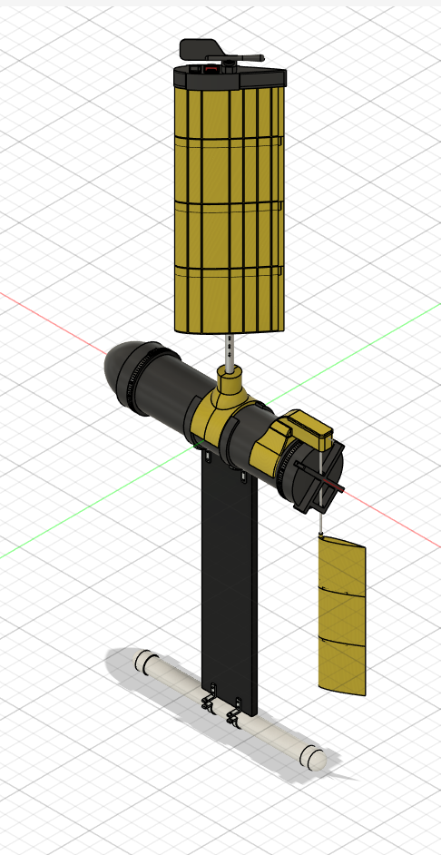
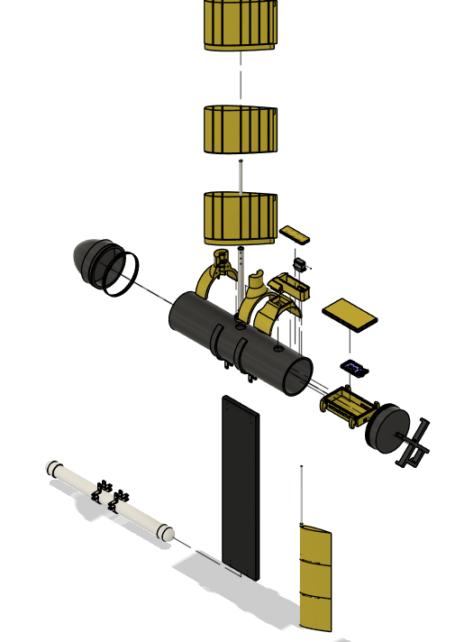

Undergraduate Researcher · Jun 2026 – Aug 2026
Autonomous Sail Drone
Built and assembled a full autonomous sailboat prototype from scratch, and improved it through CAD iterations. Cut boat mass 25% and sailed autonomously in all 8 directions, including upwind.



The project
An autonomous sailboat drone that combines sail propulsion, pendulum-based wave energy converters, and deck-mounted solar to stay powered at sea indefinitely, carrying water-temperature and dissolved-oxygen sensors. As an undergraduate researcher I built and assembled the full prototype from scratch, from machined lathe and mill parts and 3D-printed parts. I did not model the boat from scratch. I designed CAD iterations over the summer to improve it, taking those changes through fabrication and assembly. Along the way I owned two problems: why the boat couldn’t sail upwind, and how to run it on solar.
Root-cause: the upwind problem
I ran systematic tests on a pentagonal course covering different points of sail and found a consistent pattern: the boat would turn to point upwind but never actually make ground that way, which points to insufficient keel moment. To fix it, I reduced the boat’s overall weight by 25% and reengineered and lengthened the hull so it could sail autonomously in all 8 directions.
Mechanical redesign
- Rudder shaft kept snapping under load in aluminum, so I switched it to steel for far more strength
- Redesigned the guide tube for the sail shaft, which was difficult to insert during assembly (design for assembly)
- Redesigned components that weren’t reachable with a screwdriver during maintenance
- Added a sail plate behind the rudder for control drag, and wings on the keel for turn stability
Power system: going solar
I re-engineered the power budget from scratch: a baseline 12 V / 10 Ah battery charged through a 45 W panel and MPPT controller, then an upgrade to a 30 W, 21.2%-efficient panel with a boost converter and MPPT controller feeding a 36 V battery system for full-day autonomous operation. I resized the PCB in KiCad and hand-soldered it, offset the added hardware weight with more buoyancy, integrated reflective material, sealed the enclosure to IP68 for ocean deployment, and built power monitoring into the circuit with data sent over MQTT to a phone app. Paired with propeller-assist mode, the panel can generate roughly 180 Wh per six-hour run.
How it turned out
Back at the marina, we sent the boat waypoints from a ground station and confirmed the sailing fixes by having it sail autonomously in all 8 directions, including upwind.